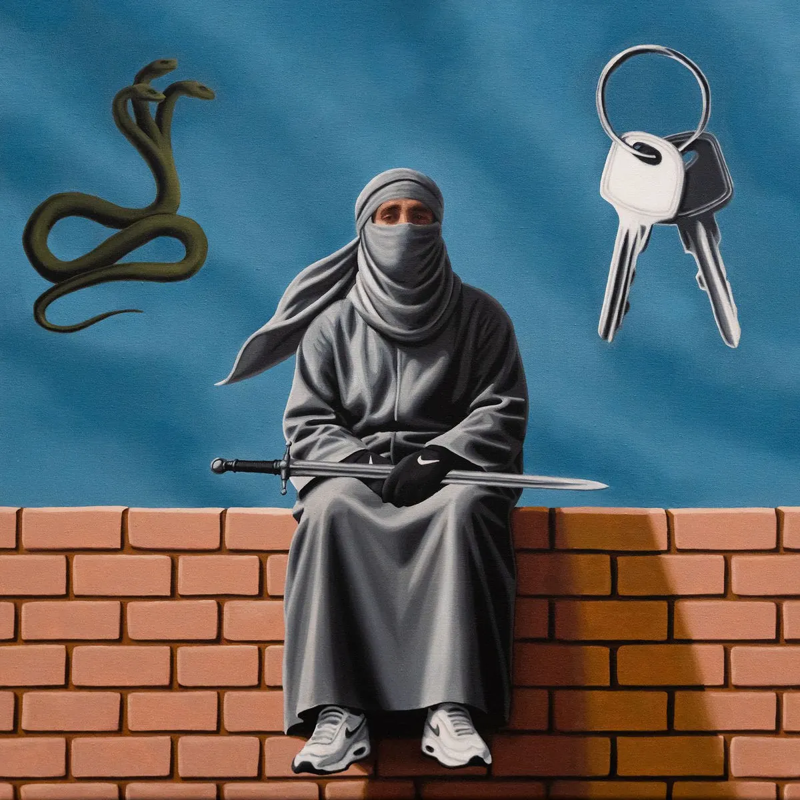

Publié le 20 novembre 2026

Aketo et le beatmaker GrandBazaar publient l'album commun CHEVALIER BLESSÉ ce vendredi 20 novembre 2026. Ce projet de 11 titres réunit la rime tranchante du membre de Sniper et des prods sombres.
Pourquoi cette alliance entre Aketo et GrandBazaar fonctionne-t-elle ?
Aketo adapte son écriture rapide à l'univers épuré de GrandBazaar. Le rappeur du groupe Sniper mise sur un kickage direct sans artifices.
Le beatmaker produit des trames sombres et minimalistes. Ses sonorités boom-bap mettent en valeur chaque phase tout au long du disque. Selon les crédits indiqués par le distributeur sur la plateforme YouTube, Mr. Lacroix s'occupe du mixage et Mani Deïz réalise le mastering.
Cette collaboration confirme l'essor des projets communs entre MC et producteurs. La scène underground valorise ce format brut, à l'image des initiatives mises en avant à l'Arch Club à l'Élysée Montmartre.
Que trouve-t-on au sommaire de CHEVALIER BLESSÉ ?
L'album rassemble 11 morceaux et propose plusieurs invités ciblés. Akhenaton pose notamment son couplet sur le titre ICE CUBE & MACK 10.
Le projet accueille également Nawfal sur le morceau ARABE DU TURFU. Selman Faris intervient de son côté sur le titre VIVRE NORMALEMENT.
| Titre ou poste | Intervenant | Rôle |
|---|---|---|
| ICE CUBE & MACK 10 | Akhenaton | Featuring |
| ARABE DU TURFU | Nawfal | Featuring |
| VIVRE NORMALEMENT | Selman Faris | Featuring |
| Mixage global | Mr. Lacroix | Ingénieur mixage |
| Mastering global | Mani Deïz | Ingénieur mastering |
Quelle est la place de ce projet dans le rap indépendant actuel ?
Aketo maintient sa régularité dans la scène indépendante avec cette sortie. Il montre qu'un artiste expérimenté peut renouveler son terrain de jeu en travaillant avec des beatmakers exigeants.
Le rap français assiste ainsi à un retour des formats d'albums resserrés. Ces collaborations directes rappellent les démarches d'autres figures de la scène, à l'image du groupe Assassin de retour avec Intelligence Artisanale. Le public retrouve ici une esthétique artisanale assumée de bout en bout.